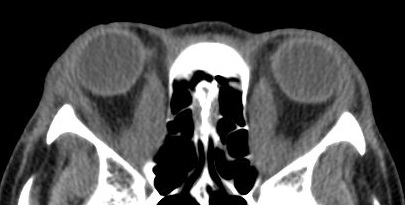

( of )
Correct: 0
Incorrect: 0
This 50 year old man reports that his eyes are chronically inflamed and that lately he has had diplopia, especially when he looks upward. Brain imaging has been normal. All aspects of the ophthalmologic and neurologic examination are normal apart from what you see here.
What is causing these abnormalities?
Incorrect
Incorrect
Incorrect
Correct!
Lid retraction and lid lag are specific clues to Graves disease. Although congestive orbital signs are often bilateral, they may be asymmetric and mild. Treatment has traditionally been with elevation of the head of the bed, topical decongestants, and brief period of oral corticosteroids. Newer nonsteroidal medical therapy is becoming available. Surgical orbital wall removal is indicated for optic neuropathy and severe proptosis with exposure keratopathy. If the inflammation is chronic, extraocular muscles may have become contracted from scarring. In that case, surgical release of the tight muscles might restore better ocular alignment and eliminate diplopia.

There are four principal abnormalities here: conjunctival hyperemia, accentuated over the extraocular muscle insertions on the sclera, a supraduction deficit in the right eye, lid retraction, and lid lag. The supraduction deficit derives either from weakness of the superior rectus muscle or tightness of the inferior rectus muscle. A good view of the orbit and especially of the extraocular muscles--not usually possible with standard brain imaging protocols (either MRI or CT)--would help. In this case, it showed enlarged extraocular muscles in both orbits.